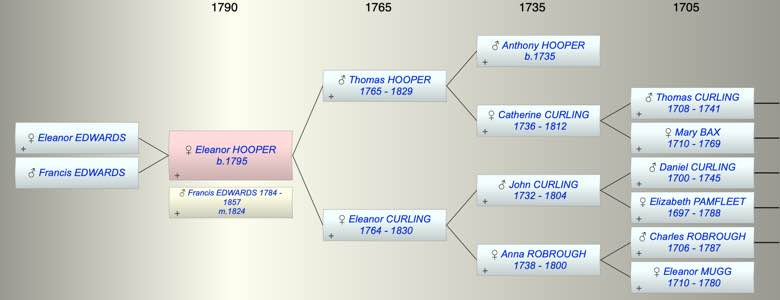

| [Index] |
| Eleanor HOOPER (1795 - ) |
|  |
| b. 1795 at Southwark |
| m. 05 Jan 1824 Francis EDWARDS (1784 - 1857) at Southwark |
| Parents: |
| Thomas Abbott HOOPER (1765 - 1829) |
| Eleanor CURLING (1764 - 1830) |
| Siblings (2): |
| Ann Maria HOOPER ( - 1806) |
| Thomas HOOPER (1796 - 1869) |
| Children (2): |
| Eleanor EDWARDS |
| Francis EDWARDS |
| Events in Eleanor HOOPER (1795 - )'s life | |||||
| Date | Age | Event | Place | Notes | Src |
| 1795 | Eleanor HOOPER was born | Southwark | Note 1 | ||
| 05 Jan 1824 | 29 | Married Francis EDWARDS (aged 40) | Southwark | Note 2 | |
| 1829 | 34 | Death of father Thomas Abbott HOOPER (aged 64) | Southwark | Note 3 | |
| 1830 | 35 | Death of mother Eleanor CURLING (aged 66) | Southwark | Note 4 | |
| 1857 | 62 | Death of husband Francis EDWARDS (aged 73) | |||
| Created on a Mac™ using iFamily for Mac™ on 8 Oct 2023 |